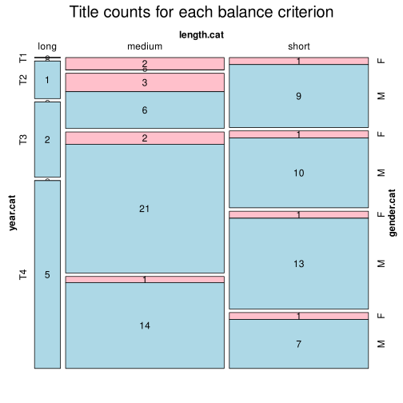

Click on a column heading to sort. Click on a text identifier to read the text (may not work in older browsers).
| Identifier | Encoding | Pages | Words | (Size) | Date (Slot) | Title | Author | Sex | Reprints |
|---|---|---|---|---|---|---|---|---|---|
| CS0001 |
eltec-1 | 11784 | (short) | 1855 (T1) | Bouře aneb oučinky zlého svědomí | Stroupežnická, Marie (1809-1883) | F | low | |
| CS0002 |
eltec-1 | 27738 | (short) | 1857 (T1) | Jaroslav | Janda Cidlinský, Bohumil (1831-1875) | M | low | |
| CS0003 |
eltec-1 | 26348 | (short) | 1857 (T1) | Žížala-Donovský, Václav (1824-1890) | M | low | ||
| CS0004 |
eltec-1 | 29716 | (short) | 1857 (T1) | Vítězství u Hoříně | Ehrenberg, Josef (1815-1882) | M | low | |
| CS0005 |
eltec-1 | 39143 | (short) | 1857 (T1) | Lichvář a pokoutník | Křičenský, Josef Jaroslav (1809-1886) | M | low | |
| CS0006 |
eltec-1 | 35474 | (short) | 1857 (T1) | Pravda, František (1817-1904) | M | unspecified | ||
| CS0007 |
eltec-1 | 33901 | (short) | 1857 (T1) | Prokop, F. F. (?-?) | M | low | ||
| CS0008 |
eltec-1 | 26395 | (short) | 1858 (T1) | Bitva u Nýrska | Formánek-Činoveský, Jan (1809-1878) | M | low | |
| CS0009 |
eltec-1 | 39691 | (short) | 1860 (T2) | Smířená vina | Formánek-Činoveský, Jan (1809-1878) | M | low | |
| CS0010 |
eltec-1 | 31148 | (short) | 1860 (T2) | Jen tři léta! | Sabina, Karel (1813-1877) | M | unspecified | |
| CS0011 |
eltec-1 | 16488 | (short) | 1864 (T2) | Poslední večer v roce | Švestka, Josef (1816-1882) | M | low | |
| CS0012 |
eltec-1 | 59832 | (medium) | 1867 (T2) | Chocholoušek, Prokop (1819-1864) | M | low | ||
| CS0013 |
eltec-1 | 13084 | (short) | 1867 (T2) | Večer svatojanský | Mollenda, Václav (1840-1903) | M | low | |
| CS0014 |
eltec-1 | 42646 | (short) | 1870 (T2) | Paní lichnická | Vlček, Václav (1839-1908) | M | low | |
| CS0015 |
eltec-1 | 13749 | (short) | 1874 (T2) | Ratmír | Vávra, Jan (1843-1900) | M | low | |
| CS0016 |
eltec-1 | 78090 | (medium) | 1875 (T2) | Jirásek, Alois (1851-1930) | M | high | ||
| CS0017 |
eltec-1 | 77845 | (medium) | 1878 (T2) | Stašek, Antal (1843-1931) | M | unspecified | ||
| CS0018 |
eltec-1 | 10665 | (short) | 1881 (T3) | Pravý přítel | Švestka, Josef (1816-1882) | M | low | |
| CS0019 |
eltec-1 | 11096 | (short) | 1881 (T3) | Dva nestejní bratři | Vítek, Jan (1849-1924) | M | low | |
| CS0020 |
eltec-1 | 10605 | (short) | 1885 (T3) | Český plavec na severu | Karas, Matěj (1839-1898) | M | low | |
| CS0021 |
eltec-1 | 19964 | (short) | 1891 (T3) | Mlada, kněžna abatyše | Unger, Ludvík (1840-1917) | M | low | |
| CS0022 |
eltec-1 | 14820 | (short) | 1896 (T3) | Kuchař, Josef (1847-1926) | M | low | ||
| CS0023 |
eltec-1 | 22714 | (short) | 1899 (T3) | Silhouetty mužů | Viková-Kunětická, Božena (1862-1934) | F | low | |
| CS0024 |
eltec-1 | 10037 | (short) | 1853 (T1) | Perly české, povídka Ženich se čtyrmi sty zlatými (vydání | Pravda, František (1817-1904) | M | unspecified | |
| CS0025 |
eltec-1 | 74882 | (medium) | 1855 (T1) | Babička (vydání | Němcová, Božena (1820-1862) | F | unspecified | |
| CS0026 |
eltec-1 | 63737 | (medium) | 1856 (T1) | Pohorská vesnice (vydání | Němcová, Božena (1820-1862) | F | unspecified | |
| CS0027 |
eltec-1 | 36735 | (short) | 1858 (T1) | Dva umělci (vydání | Pfleger-Moravský, Gustav (1833-1875) | M | unspecified | |
| CS0028 |
eltec-1 | 110879 | (long) | 1866 (T2) | Bratří z kalichu (vydání | Krouský, František Karel (1823-1909) | M | unspecified | |
| CS0029 |
eltec-1 | 83663 | (medium) | 1868 (T2) | Kříž u potoka (vydání | Světlá, Karolina (1830-1899) | F | unspecified | |
| CS0030 |
eltec-1 | 18710 | (short) | 1869 (T2) | Bratří smrti (vydání | Hrubý-Brádelský, Matěj Antonín (1837-1876) | M | unspecified | |
| CS0031 |
eltec-1 | 50143 | (medium) | 1870 (T2) | Oživené hroby (vydání | Sabina, Karel (1813-1877) | M | unspecified | |
| CS0032 |
eltec-1 | 71073 | (medium) | 1872 (T2) | Král a biskup (vydání | Stankovský, Josef Jiří (1844-1879) | M | unspecified | |
| CS0033 |
eltec-1 | 83481 | (medium) | 1873 (T2) | Nemodlenec (vydání | Světlá, Karolina (1830-1899) | F | unspecified | |
| CS0034 |
eltec-1 | 15830 | (short) | 1874 (T2) | Dva bratři (vydání | Ptáček, Antonín (1842-1882) | M | unspecified | |
| CS0035 |
eltec-1 | 29028 | (short) | 1876 (T2) | Černý petříček (vydání | Světlá, Karolina (1830-1899) | F | unspecified | |
| CS0036 |
eltec-1 | 21065 | (short) | 1878 (T2) | Newtonův mozek (vydání | Arbes, Jakub (1840-1914) | M | unspecified | |
| CS0037 |
eltec-1 | 81023 | (medium) | 1878 (T2) | Nalžovský (vydání | Podlipská, Sofie (1833-1897) | F | unspecified | |
| CS0038 |
eltec-1 | 30160 | (short) | 1878 (T2) | Cavani (vydání | Stroupežnický, Ladislav (1850-1892) | M | unspecified | |
| CS0039 |
eltec-1 | 59039 | (medium) | 1879 (T2) | Bitva u Lipan (vydání | Klicpera, Ivan (1845-1881) | M | unspecified | |
| CS0040 |
eltec-1 | 85423 | (medium) | 1881 (T3) | Tajnosti Svatováclavské trestnice v Praze, aneb, Pomstychtivost ženy (vydání | Vinařický, Karel Alois (1803-1869) | M | unspecified | |
| CS0041 |
eltec-1 | 44734 | (short) | 1883 (T3) | Z lásky (vydání | Kostelecký, Oldřich S. (1857-1922) | M | unspecified | |
| CS0042 |
eltec-1 | 49595 | (short) | 1885 (T3) | Povídka o Viktorce (vydání | Řezníček, Václav (1861-1924) | M | unspecified | |
| CS0043 |
eltec-1 | 69817 | (medium) | 1886 (T3) | Psohlavci (vydání | Jirásek, Alois (1851-1930) | M | unspecified | |
| CS0044 |
eltec-1 | 56792 | (medium) | 1886 (T3) | Drama rodiny pana Daniele (vydání | Zítek, Emanuel (1856-1934) | M | unspecified | |
| CS0045 |
eltec-1 | 70210 | (medium) | 1887 (T3) | Kandidáti existence (vydání | Arbes, Jakub (1840-1914) | M | unspecified | |
| CS0046 |
eltec-1 | 51836 | (medium) | 1887 (T3) | Masopust v Soběslavi (vydání | Škába, Karel (1858-1904) | M | unspecified | |
| CS0047 |
eltec-1 | 24645 | (short) | 1888 (T3) | Pravý výlet pana Broučka do Měsíce (vydání | Čech, Svatopluk (1846-1908) | M | unspecified | |
| CS0048 |
eltec-1 | 57604 | (medium) | 1889 (T3) | Bratři (vydání | Šimáček, Matěj Anastasia (1860-1913) | M | unspecified | |
| CS0049 |
eltec-1 | 15608 | (short) | 1889 (T3) | Kuře melancholik (vydání | Šlejhar, Josef Karel (1864-1914) | M | unspecified | |
| CS0050 |
eltec-1 | 46682 | (short) | 1889 (T3) | Nový epochální výlet pana Broučka, tentokrát do patnáctého století (vydání | Čech, Svatopluk (1846-1908) | M | unspecified | |
| CS0051 |
eltec-1 | 166267 | (long) | 1890 (T3) | Anděl míru (vydání | Arbes, Jakub (1840-1914) | M | unspecified | |
| CS0052 |
eltec-1 | 32331 | (short) | 1890 (T3) | Filosofská historie (vydání | Jirásek, Alois (1851-1930) | M | unspecified | |
| CS0053 |
eltec-1 | 57436 | (medium) | 1890 (T3) | Rytíř Kobylka (vydání | Sláma, František (1850-1917) | M | unspecified | |
| CS0054 |
eltec-1 | 92578 | (medium) | 1891 (T3) | Jan Maria Plojhar (vydání | Zeyer, Julius (1841-1901) | M | unspecified | |
| CS0055 |
eltec-1 | 46595 | (short) | 1893 (T3) | Motýlek z norské pohádky (vydání | Jelínek, Edvard (1855-1897) | M | unspecified | |
| CS0056 |
eltec-1 | 76374 | (medium) | 1893 (T3) | V ráji šumavském (vydání | Klostermann, Karel (1848-1923) | M | unspecified | |
| CS0057 |
eltec-1 | 97502 | (medium) | 1893 (T3) | Santa Lucia (vydání | Mrštík, Vilém (1863-1912) | M | unspecified | |
| CS0058 |
eltec-1 | 7136 | (short) | 1894 (T3) | Jakub Procházka (vydání | Adamec, Antonín (1853-1913) | M | unspecified | |
| CS0059 |
eltec-1 | 67273 | (medium) | 1894 (T3) | Ze světa lesních samot (vydání | Klostermann, Karel (1848-1923) | M | unspecified | |
| CS0060 |
eltec-1 | 97871 | (medium) | 1894 (T3) | Zapadlí vlastenci (vydání | Rais, Karel Václav (1859-1926) | M | unspecified | |
| CS0061 |
eltec-1 | 58226 | (medium) | 1895 (T3) | V třetím dvoře (vydání | Čapek-Chod, Karel Matěj (1860-1927) | M | unspecified | |
| CS0062 |
eltec-1 | 51873 | (medium) | 1895 (T3) | Kalibův zločin (vydání | Rais, Karel Václav (1859-1926) | M | unspecified | |
| CS0063 |
eltec-1 | 62194 | (medium) | 1884 (T3) | V temnotách bludu (vydání | Bubník, Karel (1847-1887) | M | unspecified | |
| CS0064 |
eltec-1 | 82716 | (medium) | 1896 (T3) | Skláři (vydání | Klostermann, Karel (1848-1923) | M | unspecified | |
| CS0065 |
eltec-1 | 109814 | (long) | 1897 (T3) | Pohádka máje (vydání | Mrštík, Vilém (1863-1912) | M | unspecified | |
| CS0066 |
eltec-1 | 66432 | (medium) | 1897 (T3) | Za jeden hřích (vydání | Popelková, Anna (1866-1928) | F | unspecified | |
| CS0067 |
eltec-1 | 64594 | (medium) | 1898 (T3) | Makabejští (vydání | Baar, Jindřich Šimon (1869-1925) | M | unspecified | |
| CS0068 |
eltec-1 | 76428 | (medium) | 1899 (T3) | Rodina Šillerova (vydání | Zahradník-Brodský, Bohumil (1862-1939) | M | unspecified | |
| CS0069 |
eltec-1 | 68503 | (medium) | 1899 (T3) | Druhá láska (vydání | Konrád, Josef Deograt (1859-1921) | M | unspecified | |
| CS0070 |
eltec-1 | 81096 | (medium) | 1899 (T3) | Západ (vydání | Rais, Karel Václav (1859-1926) | M | unspecified | |
| CS0071 |
eltec-1 | 71239 | (medium) | 1899 (T3) | Zamotaná vlákna (vydání | Svobodová, Růžena (1868-1920) | F | unspecified | |
| CS0072 |
eltec-1 | 70049 | (medium) | 1902 (T4) | Otrokář (vydání | Beneš-Šumavský, Václav (1850-1934) | M | unspecified | |
| CS0073 |
eltec-1 | 64397 | (medium) | 1902 (T4) | Vlastní silou (vydání | Hrdina, Josef Leopold (1856-1933) | M | unspecified | |
| CS0074 |
eltec-1 | 53840 | (medium) | 1892 (T3) | Román na moři (vydání | Heller, Servác (1845-1922) | M | unspecified | |
| CS0075 |
eltec-1 | 63934 | (medium) | 1906 (T4) | Jařmo millionů (vydání | Nečásek, Antonín (1871-1938) | M | unspecified | |
| CS0076 |
eltec-1 | 112360 | (long) | 1908 (T4) | Jan Cimbura (vydání | Baar, Jindřich Šimon (1869-1925) | M | unspecified | |
| CS0077 |
eltec-1 | 66595 | (medium) | 1908 (T4) | Právo na štěstí (vydání | Malířová, Helena (1877-1940) | F | unspecified | |
| CS0078 |
eltec-1 | 96795 | (medium) | 1909 (T4) | Kamarádi svobody (vydání | Mahen, Jiří (1882-1939) | M | unspecified | |
| CS0079 |
eltec-1 | 143493 | (long) | 1909 (T4) | Mistr Kampanus (vydání | Winter, Zikmund (1846-1912) | M | unspecified | |
| CS0080 |
eltec-1 | 69025 | (medium) | 1900 (T4) | Boj s kapitálem (vydání | Červinka, Otakar (1846-1915) | M | unspecified | |
| CS0081 |
eltec-1 | 42509 | (short) | 1912 (T4) | Na tichém venkově (vydání | Ladecký, Jan (1861-1907) | M | unspecified | |
| CS0082 |
eltec-1 | 20306 | (short) | 1912 (T4) | Život ironický a jiné povídky, povídka Život ironický (vydání | Šalda, František Xaver (1867-1937) | M | unspecified | |
| CS0083 |
eltec-1 | 62393 | (medium) | 1913 (T4) | Královský rychtář (vydání | Čečetka, František Josef (1871-1942) | M | unspecified | |
| CS0084 |
eltec-1 | 50101 | (medium) | 1914 (T4) | Rusalka (vydání | Červinka, Karel (1872-1949) | M | unspecified | |
| CS0085 |
eltec-1 | 16108 | (short) | 1915 (T4) | Krysař (vydání | Dyk, Viktor (1877-1931) | M | unspecified | |
| CS0086 |
eltec-1 | 114075 | (long) | 1915 (T4) | Do čtyř artikulů (vydání | Karas, Josef František (1876-1931) | M | unspecified | |
| CS0087 |
eltec-1 | 38348 | (short) | 1915 (T4) | Parnassie (vydání | Šmilovský, Alois Vojtěch (1837-1883) | M | unspecified | |
| CS0088 |
eltec-1 | 114457 | (long) | 1916 (T4) | Turbina (vydání | Čapek-Chod, Karel Matěj (1860-1927) | M | unspecified | |
| CS0089 |
eltec-1 | 84696 | (medium) | 1916 (T4) | Karel IV. a římský tribun lidu (cola di rienzi) (vydání | Chocholoušek, Prokop (1819-1864) | M | unspecified | |
| CS0090 |
eltec-1 | 66050 | (medium) | 1916 (T4) | Ivův román (vydání | Sova, Antonín (1864-1928) | M | unspecified | |
| CS0091 |
eltec-1 | 49064 | (short) | 1917 (T4) | Loutky i dělníci boží (vydání | Šalda, František Xaver (1867-1937) | M | unspecified | |
| CS0092 |
eltec-1 | 66750 | (medium) | 1918 (T4) | Vdavky Nanynky Kulichovy a co se kolem nich sběhlo (vydání | Herrmann, Ignát (1854-1935) | M | unspecified | |
| CS0093 |
eltec-1 | 48175 | (short) | 1918 (T4) | Právo mládí (vydání | Klecanda, Jan (1855-1920) | M | unspecified | |
| CS0094 |
eltec-1 | 34603 | (short) | 1918 (T4) | Myslivcova dceruška (vydání | Vlasáková, Julie (1860-1931) | F | unspecified | |
| CS0095 |
eltec-1 | 116696 | (long) | 1920 (T4) | Osudy dobrého vojáka Švejka za světové války (vydání | Hašek, Jaroslav (1883-1923) | M | unspecified | |
| CS0096 |
eltec-1 | 58855 | (medium) | 1900 (T4) | Markýza s trojím srdcem (vydání | Filip, Otakar (1874-1931) | M | unspecified | |
| CS0097 |
eltec-1 | 73400 | (medium) | 1901 (T4) | Svatý Hostýn (vydání | Javorník, Vojtěch Kristian (1866-????) | M | unspecified | |
| CS0098 |
eltec-1 | 57396 | (medium) | 1904 (T4) | Golgota i Tábor (vydání | Vlček, Vácslav (1839-1908) | M | unspecified | |
| CS0099 |
eltec-1 | 47563 | (short) | 1909 (T4) | Apoštol trhanů (vydání | Kopal, Petr (1834-1917) | M | unspecified | |
| CS0100 |
eltec-1 | 79789 | (medium) | 1914 (T4) | K bohu (vydání | Baar, Jindřich Šimon (1869-1925) | M | unspecified |